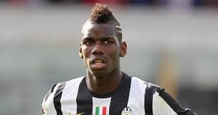

| 1)Cristiano Ronaldo famoso per le sue giocate fenomenali e per i suoi tiri potenti. | 2)Neymar talento giovanissimo del Brasile protagonista di quasi tutte le partite. | 3)Mario Gotze,nuovo giocatore del Bayern Monqavo pagato per 33 milioni.Dribbling fenomenale. | 4)Paul Pogba,titolare della nazionale Francese e della Juventus.Ha un buon fisico e un tiro dalla distanza | 5)Gianluigi Buffon portiere ancora con riflessi buoni e ottima visione.Sempre attento e pronto a dimostrare il suo talento. | 6)Yaya Toure protagonista anche lui di un campionato straordinario del Manchester City. |